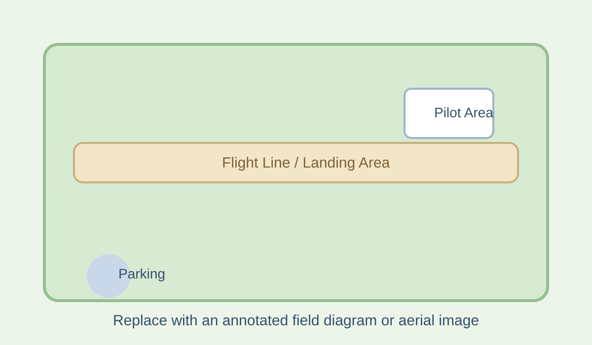

Directions
The SVSS club field consists of 17 acres of wide open space located within the Yolo County Grasslands Regional Park in Davis, California.
Directions: From I-80 take Mace Blvd south. At the city limits Mace Blvd becomes County Road 104. The park entrance is at the intersection of County Road 104 and Tremont Rd. The distance from I-80 to the park is 3.8 miles.
Coordinates: 38° 29' 49" N, 121° 41' 28" W
Flying Site Notes
The SVSS flying site is located within a public park. Please keep vehicle speed to 10 mph while driving within the park area.
All pilots flying at the SVSS field must have current AMA membership and insurance. Please follow all AMA safety guidelines while flying at the site.
Parking is located near the shade structure. The port-a-potty is at the north end of the parking lot. Please help keep the field clean and pack out any trash.
Our runway is located on the south end of the field. When other pilots are flying, please communicate with them to coordinate airspace and ensure safe launches and landings.
Safety
Pilots must follow all AMA Safety Guidelines. Current field weather conditions can be viewed on our weather station here: SVSS Weather Station.
Field Layout

Guest Pilot Checklist
- Check site access and parking instructions
- Review local safety notes
- Confirm contest or club flying schedule
- Bring AMA information if required